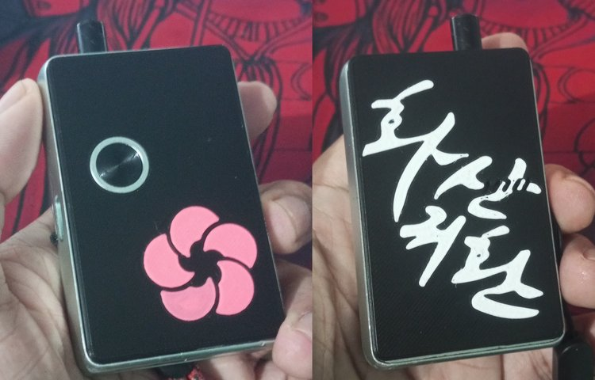

Lanjutan dari 3d print lagi
Buat panel AIO, yang ini udah pas ukurannya. Begini penampakannya.

Wanjir aseli keren yang ini.
Desainnya saya ambil dari manhwa Hwasan Gwihwan (Hangul: 화산귀환, English: Return of Mount Hua Sect). Logo mount hua + tulisan hangul dari judul novelnya (bukan manhwa nya). Serasa jadi member mount hua.
Full 3d print multicolor, bukan ngeprint 3d terus diprint lagi motifnya diatasnya.
Kalo pake panel cakep gini nambah flavor + kenikmatan ngevape jadi 1.5x sih. Tapi bo.ong. Cuman emang keren aja, mau pamer kemana ya enaknya?
Seperti biasa, file nya disini
Ini panel untuk Vandy Vape Pulse AIO v2. Pake magnet 3x1mm (kalo pake 3x2mm bisa masuk tergantung printing nya, tapi amannya di 3x1mm soalnya didesain 1.7mm depth nya).